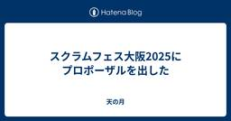
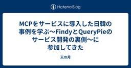
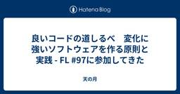
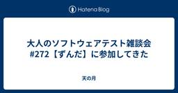
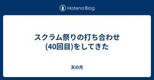
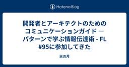

天の月
https://aki-m.hatenadiary.com/
ソフトウェア開発をしていく上での悩み, 考えたこと, 学びを書いてきます(たまに関係ない雑記も)
フィード
スクラムフェス金沢2025の打ち合わせ(25回目)に参加してきた
天の月
aki-m.hatenadiary.com スクラムフェス金沢2025に向けた準備をしてきたので、会の様子を書いていこうと思います。(今回がスクラムフェス金沢2025前最後の打ち合わせでした) Keynote準備 Pekoの準備 サーバー準備 Keynote準備 前回からの進展として、Keynoteの資料が送られてきたり電話で会話させていただける予定ができたりしたので、それらの共有とConfengineに仮登壇のタイトルを記載しておくこととなにかトラブルがあって投影できなかったときのために、いただいた資料をPDF化することを決めました。 Pekoの準備 当日使うPekoに関して、準備や段取りの…
2時間前

スクラムフェス大阪2025にプロポーザルを出した
天の月
スクラムフェス大阪2025にプロポーザルを出したのでその告知です。 その1 その2 このプロポーザルを出した理由 共通 その1 その2 その1 confengine.com コミュニティで多数の事例を聞いたり、アジャイル開発を基軸とした多数のプロセスや理論を学ぶと、自分が置かれている状況の問題点や不遇さが明確になったり、自分が理想としている姿がどんどん磨かれてGapが勝手に広がっていくことがありました。そういったとき、自分の場合は、(実際に目に見える行動には移さなくても)自分自身がそのプロダクトやプロジェクトに対する当事者であるにもかかわらず、そこから少し離れたような場所に行って、うまくいって…
1日前

MCPをサービスに導入した日韓の事例を学ぶ〜FindyとQueryPieのサービス開発の裏側〜に参加してきた
天の月
MCPをサービスに導入した日韓の事例を学ぶ〜FindyとQueryPieのサービス開発の裏側〜 - connpass こちらのイベントに参加してきたので、会の様子と感想を書いていこうと思います。 会の概要 会の様子 講演1 : 開発2日間！MCPを導入した新サービスの裏側 講演2 :10分でMCPサーバーを作ろう！ パネルディスカッション MCPを活用したサービスが生まれた理由 自社プロダクトにMCPをどう活かして既存とどう変えているのか？ MCPサービス開発から数ヶ月たってどうか？ 反響はどうだったか？ どうやって早い意思決定をしたのか？ 新しいサービスでMCPを導入する際に重視したこと セ…
2日前

良いコードの道しるべ 変化に強いソフトウェアを作る原則と実践 - FL #97に参加してきた
天の月
forkwell.connpass.com こちらのイベントに参加してきたので、会の様子と感想を書いていこうと思います。 会の概要 会の様子 良いコードとは？ 書籍のおすすめポイント 対象読者 ハンマーと釘問題 知識の他に必要なこと Q&A 使い捨てられるようにしておく必要もあると思うがどう考えているか？ コード品質系の書籍は類書も多いが一番のきっかけは？ 生成AIのコーディング能力が伸びていて変更容易性そのものが人を前程しなくなっていると思うがどう考えるか？ 良いコードの評価基準を意識して参画するためにまず優先してほしいものは？ 意思決定のトレードオフにどのようにチームとして向き合うべきか？…
3日前

大人のソフトウェアテスト雑談会 #272【ずんだ】に参加してきた
天の月
大人のソフトウェアテスト雑談会 #272【ずんだ】 - connpass 今週もテストの街葛飾に行ってきたので、会の様子と感想を書いていこうと思います。 スタープレイヤー エンジニアリング統括責任者の手引き 飛び道具 VSTeP 全体を通した感想 スタープレイヤー 組織の中にいる一人のメンバーがメディア等でずっとスタープレイヤーとして取り上げられ続けるというのは、組織の10年後といった部分を見据えると懐疑的な目線があるという話がありました。 また、スタープレイヤーというのがスキルなら良いものの、ホリエモンムーブ的な目立つことに特化しているが故に目立つみたいな場合は厳しいですよね、という話が出て…
4日前

スクラム祭りの打ち合わせ(40回目)をしてきた
天の月
aki-m.hatenadiary.com こちらの打ち合わせをしてきたので、会の様子と感想を書いていこうと思います。 定例時間の変更 メール返信 スポンサーの方々へのメール 定例時間の変更 元々月曜日の22:00からやっていたのですが、時間が遅すぎて眠くなるのと笑、自分が次の日がここ最近は朝早くて睡眠時間を削られるのがしんどいという2点から、火曜日の20:00-に時間変更することにしました。 メール返信 今回はスポンサーの方からのメールはないものの、スポンサー申込みを検討しているという方から連絡が来ていたので、メールを返信してきました。 前回送信したメールはテンプレート化しておこうという話を…
5日前

開発者とアーキテクトのためのコミュニケーションガイド ―パターンで学ぶ情報伝達術 - FL #95に参加してきた
天の月
forkwell.connpass.com こちらのイベントに参加してきたので、会の様子と感想を書いていこうと思います。 会の概要 会の様子 講演 視覚的コミュニケーション(第一部) マルチモーダル・コミュニケーション(第二部) ナレッジを伝達する(第三部) リモート・コミュニケーション(第四部) 本書の読み方 Q&A 相手が攻撃的だと感じたときの対処法は？ 送り手のコストが高くなりすぎると受け手とのコミュニケーションの総和は大きくなってしまうのでは？ 大抵は情報不足に起因していると思うのだが相互理解をコスパよくやるためにはどうすれば良いか？ 配慮をすると1文字あたりの情報量が小さくなるのが気…
6日前
スクラムフェス金沢2025の打ち合わせ(24回目)に参加してきた
天の月
aki-m.hatenadiary.com スクラムフェス金沢2025に向けた準備をしてきたので、会の様子を書いていこうと思います。 今日期限の宿題状況確認 モバイルルーター Keynote キャッシュ・フローの更新 打ち上げ 当日の動き ネームタグ 今日期限の宿題状況確認 今日解決する予定だった仕事を確認してきました。 ノベリティに関しては発注が完了して、ConfengineのKeynote内容に関しては、まだ見えないような気がする&Keynoteで話される内容がConfengineに書ききれるような内容としてはまだないので、対応方針を確認することにしました。 また、品川アジャイルに関しては…
7日前

コクヨ、朝日新聞社に聞く 内製開発で変える組織の未来 Tech Seminarに参加してきた
天の月
findy.connpass.com こちらのイベントに参加してきたので、会の様子と感想を書いていこうと思います。 会の概要 会の様子 小谷さんの講演 西島さんの講演 会全体を通した感想 会の概要 以下、イベントページから引用です。 AI技術の台頭をはじめ、ビジネス環境が急速に変化し続ける現代において、企業が競争力を維持・向上させるために、迅速かつ柔軟なIT活用が求められています。その中でも、ITの内製化の重要性がますます高まっています。内製化やDXの推進、成功が企業の競争性向上、成長戦略において不可欠な要素となっている一方で、これらの対応が多くの企業にとって課題ともなっております。本イベント…
8日前
2025年5月のふりかえり
天の月
2025年5月が終わったので、ふりかえりをしていこうと思います。 仕事 社外活動 プライベート 仕事 GWが終わってからは仕事が始まったので当然忙しくはなりましたが、とはいえゆるゆると仕事をしていました。元々助走期間みたいな感じで考えていたので、徐々にリズムを取り戻しながらということでここは理想的な時間を過ごすことができました。 ただし、その後は急にぐっと忙しくなり、リズムが変わりすぎてしまったと共に、瞬発的に仕事を弾いていくような仕事の仕方にちょっとなってしまったなというのは大きな反省点です。 一方で、大きな象みたいなものが見えているものの誰もそこには触れないという動きが起きていた+自分自身…
9日前
アジャイルカフェ@オンライン 第73回に参加してきた
天の月
アジャイルカフェ@オンライン 第73回（※Zoom開催 耳だけOK） - connpass こちらのイベントに参加してきたので、会の様子と感想を書いていこうと思います。 会の概要 会の様子 WF開発の成功体験 アジャイル開発の勘違い 伝え方 会全体を通した感想 会の概要 アジャイルコーチの3人が、アジャイル実践者からの悩みに対して答えていくイベントです。今回のテーマは、「ウォーターフォール開発の成功体験がある人に、アジャイル開発を伝える際に気をつけるべきことは？」でした。 会の様子 WF開発の成功体験 天野さんは実際に成功したという話がありました。一人でやっていて小さいプロジェクトをやっていた…
10日前
大人のソフトウェアテスト雑談会 #271【トリ】に参加してきた
天の月
大人のソフトウェアテスト雑談会 #271【トリ】 - connpass スクラム祭りの目的 発表の炎上 リトリート 皆で議論する運営と皆で作業する運営 スクラムへの固執 スクラム祭りの目的 スクラム祭りで地域トラックを多数集める目的ってなんなの？という話をしていきました。 結論、やってみると楽しそうだからということ以外はそんなにないのですが、なんでそれくらいしか理由を書いていないのか？という裏話をしたりしました。 発表の炎上 とある発表が炎上したということで、なんで炎上したのかの理由の一つとして、元々発表する予定だった内容と違うという点があったんじゃないか？という話がありました。 ただ、巷では…
11日前
スクラム祭りの打ち合わせ(39回目)をしてきた
天の月
aki-m.hatenadiary.com こちらの打ち合わせをしてきたので、会の様子と感想を書いていこうと思います。 キャッシュ・フロー更新 スポンサー募集Formsの変更&テスト スポンサーメール返信 請求書発行依頼 請求書発行枚数の確認 keynoteの想い キャッシュ・フロー更新 ありがたいことにここ最近はスポンサーが増えていることもあって毎回この作業から入っています。今回はついにプラチナスポンサーの応募があったので、そちらを反映させていきました。 スポンサー募集Formsの変更&テスト スポンサー募集Formsの家、プラチナスポンサーが前述の通り申し込みあって完売したので、そちらを閉…
12日前
学びを楽しむ! エンジニアによる勉強法発表会・勉強法の勉強会 #5に参加してきた
天の月
https://yumemi.connpass.com/event/354010/ こちらのイベントに参加してきたので、会の様子と感想を書いていこうと思います。 会の概要 会の様子 インプットの選択と集中を、自分好みのAIと共に AI時代だからこそ、自分で考える知的生産術 アウトプットを目指す勉強法 グラフィックデザイナーがSwiftUIを習得するために取り組んでいる学習法 学びは趣味の延長線 会全体を通した感想 会の概要 名前の通り、エンジニアの方々の「勉強」に関して勉強していくイベントです。 会の様子 インプットの選択と集中を、自分好みのAIと共に 技術情報が氾濫している状態で選択と集中の…
13日前
スクラムフェス金沢2025の打ち合わせ(23回目)に参加してきた
天の月
aki-m.hatenadiary.com スクラムフェス金沢2025に向けた準備をしてきたので、会の様子を書いていこうと思います。 Keynoteの状況共有 WSのセッション調整 キャッシュ・フロー更新 ネットワーキング ノベルティ タスクの棚卸し Keynoteの状況共有 依頼いただいていた事項が完了して、事前に打ち合わせすることもできそうだという話の共有がありました。(意外と日がないので運営MTGが始まる前に動いてくれて話が共有されました) WSのセッション調整 WSの枠を伸ばしたいという要望がWS実施者からあったので、その要望を反映させるためにどういう案があるか？という話をしていきまし…
14日前
Cline&CursorによるAIコーディング徹底活用―Live Vibe Coding付きに参加してきた
天の月
Cline&CursorによるAIコーディング徹底活用―Live Vibe Coding付き - connpass こちらのイベントに参加してきたので、会の様子と感想を書いていこうと思います。(冒頭の解説とライブコーディング部分のみ視聴しました) 会の概要 会の様子 AIツールの使い分け Roo Codeのデモ&解説 会全体を通した感想 会の概要 以下、イベントページから共有です。 Cursor・Clineなどのソフトウェア開発支援のAIツールの進化は目覚ましく、開発者の生産性に大きく影響を与えています。 一方、進化が早すぎるがゆえにあまり使いこなせていない、使いこなせている自信がないという方…
15日前
スクラム祭りの打ち合わせ(38.5回目)をしてきた
天の月
aki-m.hatenadiary.com こちらの打ち合わせ(番外編)をしてきたので、会の様子と感想を書いていこうと思います。 Keynote カンファレンス設計 オンラインの盛り上げ 忘れるスキル OST Keynote Keynoteとしてどういうセッションを求めたいのか？という話をしていきました。傾向とパターンを掴むために、スクラム祭りでは過去にあった講演であのKeynoteをして欲しいという話や、逆にあのKeynoteは(普通のセッションとしては全然いいんだけど)Keynoteとしてはして欲しくないという話をしました。 軸として、場を盛り上げてカンファレンスのこの後の体験に対してワク…
16日前
大人のソフトウェアテスト雑談会 #270【ハチ】に参加してきた
天の月
ost-zatu.connpass.com 今週もテストの街葛飾に行ってきたので、会の様子と感想を書いていこうと思います。 ビブリオバトル スクラムフェス ファシリテーション本 鎌倉 ファシリテーター ビブリオバトル XP祭りの名物にビブリオバトルがありますが、スクラム祭りが同時開催ならスクラム祭りでもビブリオバトルをやって、頂上決戦を最後にやるみたいなコンテンツやったら面白そうだという話が出ていました。 ちなみに、XP祭りにおけるビブリオバトルのコンテンツは、バトルの応募はされないんだけれども視聴者はたくさんいるコンテンツになっているそうです。 スクラムフェス スクラムフェスが毎月ありますが…
17日前
スクラム祭りの打ち合わせ(38回目)をしてきた
天の月
aki-m.hatenadiary.com こちらの打ち合わせをしてきたので、会の様子と感想を書いていこうと思います。 キャッシュ・フロー更新 メール返信 浅草地域トラックの追加 地域トラックの確認 趣意書のupdate Confengineのupdate キャッシュ・フロー更新 先週に引き続き、ありがたいことにスポンサーが増えていたのでキャッシュ・フローを更新しました。 Goldスポンサーということもありだいぶ黒字化したので、感謝しかないです。 メール返信 スポンサーの方からメールをいただけたので、それに対してお礼の返信をしました。 浅草地域トラックの追加 地域トラックがすでに多数ある状況で…
19日前
XP祭り2025の運営MTG(4回目)に参加してきた
天の月
XP祭りの運営MTG(4回目)に参加してきたので、会の様子を書いていこうと思います。 Confengineのアップデート 次回日程決め Confengineのアップデート confengine.com スクラム祭りでConfengineはアップデートしたのですが、まだXP祭りの運営でこういうところをアップデートしたいみたいなのは話すことができていなかったので、そこのアップデートをどうしましょうか？という話をしていきました。 具体的には以下を直していきました。 XP祭りのHPに記載されているConfengineのリンクを、スクラム祭りのConfengineのリンクに修正しました XP祭りに登壇し…
19日前
伝わるコードレビュー 開発チームの生産性を高める「上手な伝え方」の教科書 - FL#93に参加してきた
天の月
伝わるコードレビュー 開発チームの生産性を高める「上手な伝え方」の教科書 - FL#93 - connpass こちらのイベントに参加してきたので、会の様子と感想を書いていこうと思います。 会の概要 会の様子 講演 本を書いたきっかけ 本を書く際に気をつけたこと 印象的だったこと 本書に込めた想い レビュアーに伝わるPRの準備 Q&Aパネルトーク レビューコメントで必ず修正してほしい、参考情報、みたいなレベル感をどのように調整しているか？ レビューのタイミングで基本設計やアーキテクチャの問題を話す際に苦慮しているのだが伝え方で改善できる部分はあるか？ レビュアーとレビュイーで意見が分かれた場合…
20日前
スクラムフェス金沢2025の打ち合わせ(22回目)に参加してきた
天の月
aki-m.hatenadiary.com スクラムフェス金沢2025に向けた準備をしてきたので、会の様子を書いていこうと思います。 香盤表確認 セッション調整 スポンサーブース設営 キャッシュ・フロー確認&更新 香盤表確認 自分をはじめとしたスクラムフェス新潟に参加していたメンバーが前回の運営MTGに参加することができていなかったので、そのときに作った香盤表を確認しました。 結論、特に問題もなく、調整しなくても良さそうだという話になりました。 セッション調整 採択している中さんのセッションを延長したいという話がご本人からあったのですが、それができるのか？という話をまずしていきました。 結論、…
21日前
Hey Say アジャCITYの読書会(5回目)に参加してきた
天の月
表題のイベントに参加してきたので、会の様子を書いていきます。今回もホンダ流のワイガヤのすすめを読んでいって今回が最後でした。 テーマのバランス 批判と個人攻撃を区別する 大企業体質×わいがや わいがやに参加している年齢層の広さ 無駄話から本題へ切り替わるタイミングの早さ 複雑なことを単純な認知にしていきたくなる理由 テーマのバランス テーマはかなり抽象的なところからスタートしていましたが、突拍子もないテーマだとも思いそうだし、途中で収束を挟んでいたところからも一定はテーマのスコープを定めてあげるような取り組みが必要なんだろうという話をしていきました。 批判と個人攻撃を区別する 例えば若者のこと…
22日前
アジャイルカフェ@オンライン 第72回に参加してきた
天の月
agile-studio.connpass.com こちらのイベントに参加してきたので、会の様子と感想を書いていこうと思います。 agile-studio.connpass.com 会の概要 会の様子 前提 見積もりの目的 見積もりのやり方 No Estimate Q&A タスクも相対見積もりするのが人気か？ 実装を始めてから見積もりよりも大変なことが分かったらどうする？その逆は？ プロダクトリリースまでの見積もりに対して進捗状況を知る方法はバーンダウンチャート以外にあるか？ 会全体を通した感想 会の概要 家永さん天野さんじょうさんの3人のアジャイルコーチが、アジャイル実践者から寄せられた質問…
23日前
yr-learning Vol67に参加してきた
天の月
yr-learning Vol67 - connpass こちらのイベントに参加してきたので、会の様子と感想を書いていこうと思います。 BuilderパターンでGameStatusをBuildしてみる 次回以降の予定決め BuilderパターンでGameStatusをBuildしてみる Builderパターンを使って、GameStatusをBuildしてみるようにしました。Typescriptで書いていましたが、どちらかというとOOPチックに書いてみて、こんなものかなというのを途中途中で議論しながら作りました。 そもそも今のタイミングでBuilderパターンを書く必要があるのかという話や、Bu…
24日前
大人のソフトウェアテスト雑談会 #269【笹団子】に参加してきた
天の月
https://ost-zatu.connpass.com/event/354733/ 今週もテストの街葛飾に行ってきたので、会の様子と感想を書いていこうと思います。 スクラムフェス新潟 おおひらさんの声品質 全体を通した感想 スクラムフェス新潟 色々な人が登壇していたので、印象的だったセッションの話をしていきました。やましたさんのセッションや自分のセッションの話が挙がっていて、自分のセッションはここで挙げてくれると思っていなかったのでとても光栄でした。(ただしやましたさんは自分のようにはなりたいとは思わなかったそうです笑) また、各々が楽しかった思い出話だったり、葛飾にゆかりがある人の近況に…
25日前
スクラム祭りの打ち合わせ(37回目)をしてきた
天の月
aki-m.hatenadiary.com こちらの打ち合わせをしてきたので、会の様子と感想を書いていこうと思います。 キャッシュ・フロー更新 趣意書の更新箇所説明 バックログのリファインメント Keynote Speakerを確定する 売り出すチケットの種類を決める&Eventbrightでチケット販売開始 サテライトの地域を確定させる スポンサー申し込んでもらっている方々からロゴをもらう&HPに反映させる ドラフト会議の日程や段取りを確定する Discordのチャンネル設計を決める HPの更新箇所を洗い出す キャッシュ・フロー更新 ありがたいことにスポンサーが増えていたのでキャッシュ・フロ…
1ヶ月前
スクラムフェス新潟Day2に参加してきた
天の月
www.scrumfestniigata.org スクラムフェス新潟Day2に参加してきたので会の様子と感想を書いていこうと思います。(WIP) Ryoさんと話す moriyuyaさんと話す moriyuyaさん川口さんHiroさんと話す いくおさんびばさんと話す 登壇 Ryoさんと話す 裏番組だったRyoさんと話をしていきました。Ryoさんはスライド作成の型の完成系に近づいたと今回の発表で感じてたそうですが、スライドが20枚ちょいと少なかったので、1ページあたりどれくらい話すつもりか聞いた所、話そうと思えばいくらでも話せると思っているということで、むしろこれ以上スライドを増やすと時間オーバー…
1ヶ月前
スクラムフェス新潟2025で登壇してきた
天の月
www.scrumfestniigata.org スクラムフェス新潟2025で登壇してきたのでそのふりかえりです。 登壇準備 登壇中 登壇後 登壇準備 以前少し書いたのですが今回はこれがAcceptされるとはびっくりという感じで、テストとはいえスクラムフェス新潟の人たちに受けるのかな？(だいぶマニアックなテーマではないかな...?)という感じがしたので、驚きからのスタートでした。まずどういう風にすると面白い話になるかな、というのを考えていきました。言ってしまえば結構特殊なコンテキスト環境下におけるN=1の事例発表ですし正解とかベストプラクティスとか体系的な話はまるでできないので、自分自身あんま…
1ヶ月前
スクラムフェス新潟2025 Day1に参加してきた
天の月
www.scrumfestniigata.org スクラムフェス新潟Day1に参加してきたので会の様子と感想を書いていこうと思います。 到着 リハーサル いくおさんが現れる やまずんさんと初対面する リハーサル のりっくさんマッシャーさんと話す じょーさんと話す ささおさんと話す KuroさんほそたにさんHIROさんと話す びばさんと話す じゅんぺーさんと話す えわさんと話す オープニング スポンサーセッション おおひらさんとnacoさんのセッションを聞く keynote ばっさーさんと会ってグッズをもらう かっぱさんとお話する かっぱさんきょんさんHIROさんとお話する KAZUKINGさん…
1ヶ月前